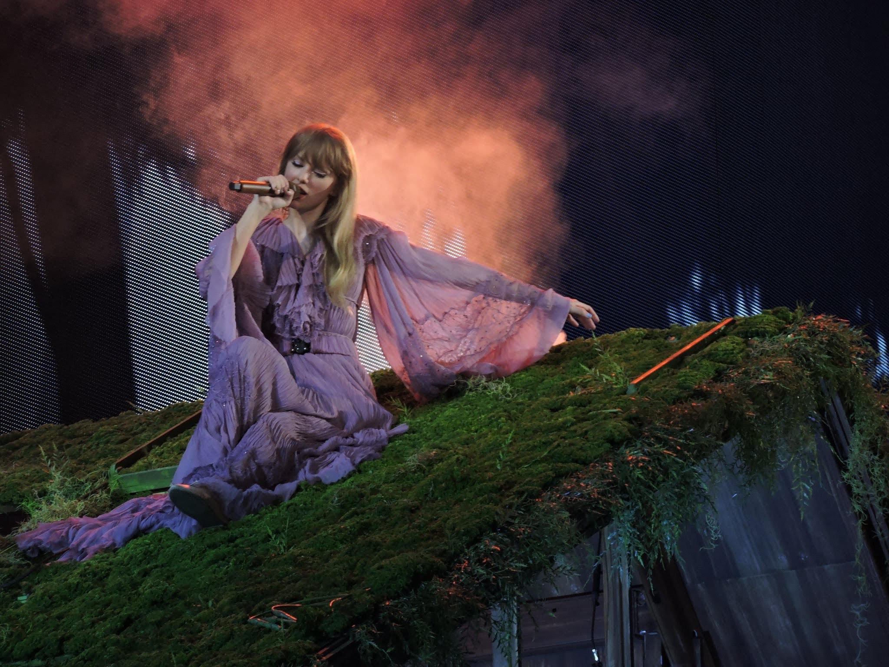

Explorando "Folklore": A Jornada Introspectiva de Taylor Swift
Lançado em 2020, "Folklore" marca um afastamento notável do som pop anterior de Taylor Swift. O álbum apresenta um estilo mais intimista e contemplativo, explorando temas profundos e complexos.

O álbum é repleto de narrativas envolventes, desde histórias de amor até reflexões sobre a passagem do tempo. As faixas, como "Cardigan" e "Exile," são carregadas de emoções e uma sensação de melancolia.
"Folklore" surpreendeu os fãs e críticos pela maturidade lírica e musical de Swift. A colaboração com Aaron Dessner do The National e Jack Antonoff trouxe uma sonoridade única e rica ao álbum.
Recebendo aclamação da crítica, "Folklore" ganhou prêmios e foi elogiado por sua autenticidade e profundidade. O álbum demonstra a capacidade de Taylor Swift de se reinventar e evoluir artisticamente.
Com "Folklore," Taylor Swift ofereceu aos ouvintes uma jornada sonora e emocional única, solidificando seu status como uma das artistas mais versáteis e influentes de sua geração.